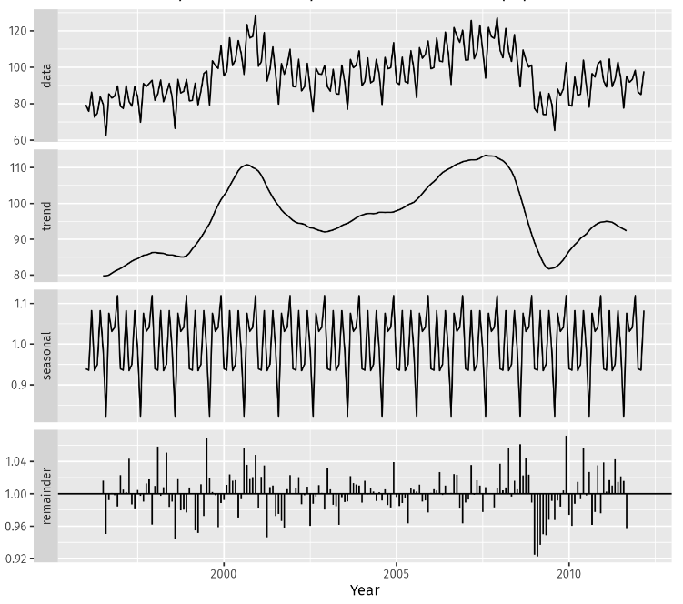

Decomposition
This document describes statistical methods that can used for time series decomposition, with associated formulas and practical usage with Excel.
To make better forecast, it is usually required to separate the time series into different parts:
- The trend \(T_t\): model the low frequency variation, can be fit to a linear evolution
- The seasonality component \(S_t\): model periodic variations. First step is to identify the period, and second step is to estimate \(S_t\)
- The residuals \(R_t\): the random variation, that should have zero mean
There are two classical models (we will only focus on them for this course):
- the additive model, where \(Y_t = T_t + S_t + R_t\)
- the multiplicative model, where \(Y_t = T_t \times S_t \times R_t\)
But more generally, each component can be either additive or multiplicative.
Notations
Here is a list of the notations used throughout this document
- \(Y_t\): the data value at time \(t\)
- \(F_t\): the forecasted value at time \(t\)
- \(G_t\): the smoothed value at time \(t\)
- \(S_t\): the seasonal coefficient at time \(t\)
- \(R_t\): the residual at time \(t\)
- \(T_t\): the trend at time \(t\)
Step by step methodology
- VIZ: Plot the time series, it is very important to take a look at the evolution of what you are studying. Clearly identify sampling frequency (daily, weekly, monthly, quarterly, yearly?).
- TREND: Identify if there is a trend, and whether trend is additive or multiplicative (is trend linear?)
- SEASONALITY: Identify if there is seasonality, and whether seasonality is additive or multiplicative (is the amplitude of period fluctuation increasing with time?) and it's period.
- MODEL: Build a model (additive or multiplicative for trend/seasonality) for your data and write the associated equation
Model selection
| Trend | Seasonality | Method |
|---|---|---|
| No | No | Simple Exponential smoothing or Moving Average |
| Yes | No | Double Exponential smoothing |
| No | Yes | Decomposition (trend=0) |
| Yes | Yes | Decomposition (trend linear) |
Decomposition methodology
- ESTIMATE TREND: Estimate a trend \(\hat{T_t}\) using central moving average with a window size equal to the seasonal periodicity.
- DETREND DATA: Compute the detrended time series:
Additive\(\displaystyle D_t = Y_t - \hat{T_t}\)Multiplicative\(\displaystyle D_t = Y_t / \hat{T_t}\)
- ESTIMATE SEASONAL COMPONENT: Use \(D_t\) to estimate seasonal component. You should average the values of the coefficient for each period (for instance, average all January component for yearly seasonality and monthly data). This gives \(\hat{S_t}\) which is periodic.
- REMOVE SEASONALITY TO FOCUS ON TREND: Estimate \(A_t\), which should contain the trend and the residuals. We will use this data to perform a modelling of the trend:
Additive\(\displaystyle A_t = Y_r - \hat{S_t}\)Multiplicative\(\displaystyle A_t = Y_r / \hat{S_t}\)
- MODEL TREND: At this point, a linear model is computed for \(A_t\) (in the course we only see linear models, but polynomial models could be used if trend is non-linear). This idea here is to model the trend as a straight line with a given slope and intercept (that can easily be computed with Excel functions
SLOPEandINTERCEPT). Now \(\hat{A_t} = at + b\). The linear fit is the same for additive and multiplicative models. - COMPUTE RESIDUALS: Estimate the residuals:
Additive\(\displaystyle R_t = Y_r - \hat{A_t} - \hat{S_t}\)Multiplicative\(\displaystyle R_t = \frac{Y_r}{\hat{T_t} \times \hat{S_t}}\)
- FORECAST RESIDUALS: Residuals should be trendless and should not exhibit seasonality, therefore they can be forecasted using traditionnal exponential smoothing. The forecasted residuals will be called \(\hat{R_t}\)
- FORECAST: Now to compute the forecast, just apply
Additive\(\displaystyle F_t = \hat{A_t} + \hat{S_t} + \hat{R_t}\)Multiplicative\(\displaystyle F_t = \hat{A_t} \times \hat{S_t} \times \hat{R_t}\)
When using Excel to build such a model, you should have the following columns:
- \(t\): (1 to \(N\))
- \(Y\): Data points
- \(\hat{T_t}\): Central moving average with \(k\) points (k being the seasonal period)
- \(D\): Detrended time series
- \(S\): Seasonal component
- \(A\): Seasonally adjusted component
- \(T\): \(at + b\) using \(a\) and \(b\) from the linear regression of \(A\) vs \(t\)
- \(R\): Residuals
- \(\hat{R}\): Forecast of \(R\) using exponential smoothing with \(\alpha\) being either fixed or solved to minimize the standard error.
- \(RE\): Residuals forecast error (\(R_t-\hat{R_t}\))
- \(F\): Forecast of \(Y\)
- \(SE\): Standard error (\(Y_t-F_t\))
Example
Here is an example of a time series decomposition.
